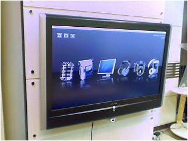

塵間感知與雲端計算實驗室
Ubiquitous Sensing and Cloud Computing Lab
歡迎!
 本實驗室致力於人工智慧（AI）技術之研發與應用，專注於將機器學習與深度學習技術落實於實際場域。 近年來，實驗室積極投入
AI 專案開發，並與業界公司合作推動產學合作計畫，包含行動應用程式（App）開發、資料分析平台設計，強調技術落地與產業實務接軌，提升學生實作能力與產業競爭力。
本實驗室致力於人工智慧（AI）技術之研發與應用，專注於將機器學習與深度學習技術落實於實際場域。 近年來，實驗室積極投入
AI 專案開發，並與業界公司合作推動產學合作計畫，包含行動應用程式（App）開發、資料分析平台設計，強調技術落地與產業實務接軌，提升學生實作能力與產業競爭力。
歡迎有程式設計專長的同學加入我們實驗室!
也歡迎有興趣肯吃苦的同學一起探索這塊深度學習應用的領域。
 本實驗室位置在成功校區資訊系新館6樓65607室，有任何實驗室的最新消息及成員資料會不定期在網站作更新發布。
本實驗室位置在成功校區資訊系新館6樓65607室，有任何實驗室的最新消息及成員資料會不定期在網站作更新發布。
若有任何批評與指教歡迎您的來信!

